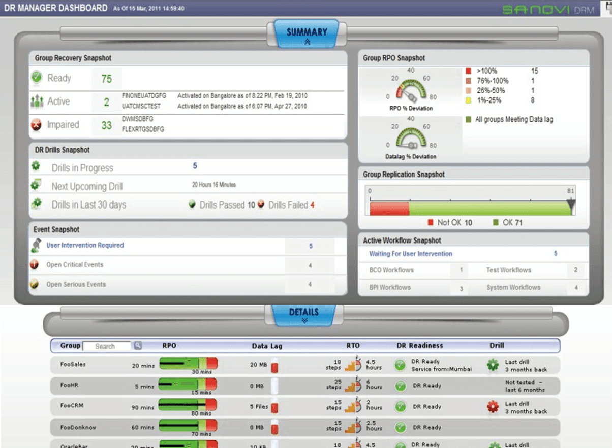
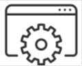
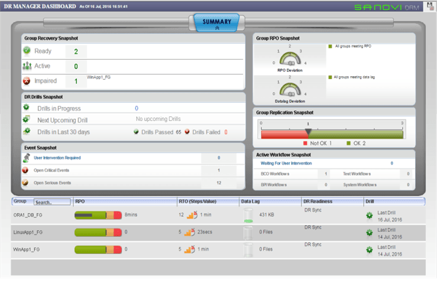
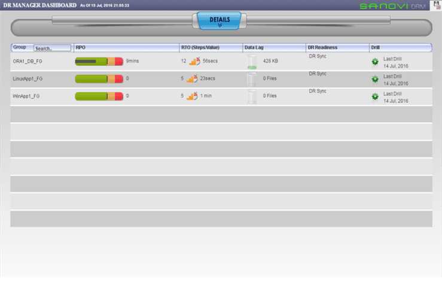
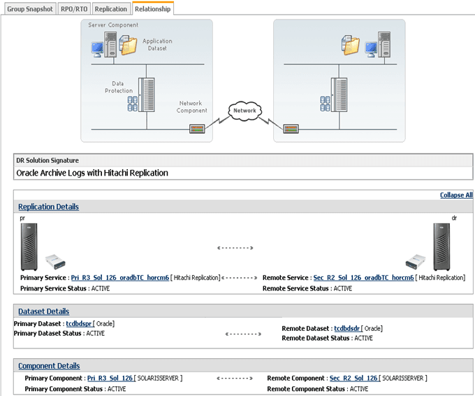
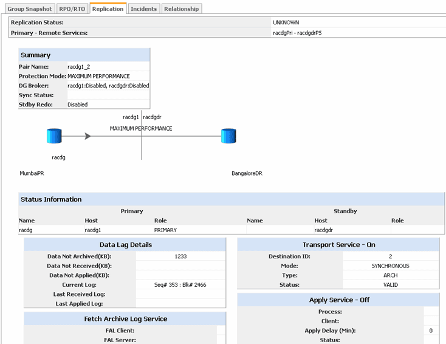
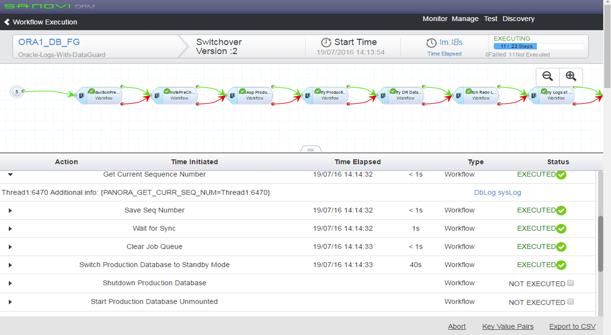
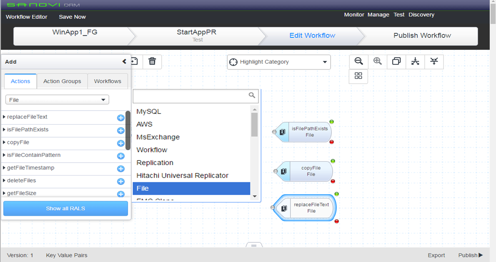

SANOVI
DR Management Suite
Sanovi DRM™ Suite는 실시간 RTO/RPO 등 재해 복구 준비상태를 모니터링하고, 최소한의 노력으로 모의 훈련을 수행하며, 워크플로우를 통해 복구 프로세스를 자동화 시켜주는 뛰어난 재해 복구 관리(DRM) 솔루션입니다
- 재해 복구(DR) 테스트 자동화 – 테스트 수행에 필요한 운영 비용 및 리소스 절감
- 항시 복구 대비 – 시운전 중 복구를 저해하는 환경 변화를 탐지하고 사전에 예방
- IT 민첩성 증대 – 복구 SLA 규정 위반 사항 경계 및 모니터링
- 규제 요구 사항 충족 – DR 규정 준수 관련 보고서 및 문서를 생성하여 비즈니스 및 규제 요구 사항을 충족

재해복구 자동 관리 솔루션 “Sanovi”


SANOVI 특징
Sanovi DRM을 이용하면 재해나 인프라 장애로 인해 운영이 중단되어도 언제든 복구할 수 있습니다.
- 여러 공급업체를 이용하는 물리적/가상 환경의 복잡한 복구 작업 자동화
- 애플리케이션 데이터 손실 및 복구 시간을 실시간으로 확인
- 시운전 기능으로 복구 장애를 야기하는 환경 변화 탐지
- 리소스와 비용이 많이 들고 불필요한 DR 프로세스를 자동화
- 서비스 수준 및 RPO/RTO에 부합하는 복구 워크플로우 설계
- 글로벌 복구 감사 보고 및 문서 제공
Sanovi DRM Suite는 서비스 수준 목표에 따라 DR 인프라를 모니터링 및 테스트하고
비즈니스 애플리케이션을 자동으로 복구하여 복구 준비 태세를 완비하도록 해줍니다.
에이전트를 사용하지 않는 기술을 통해 표준 기반플랫폼에 구축되는 Sanovi 소프트웨어는
기존의 데이터베이스 복제 및 스토리지 서브시스템 복제 인프라를 활용할 수 있도록 해 주면서,
완전한 가시성과 자동화를 제공하여 성공적인 IT 복구 기능을 구현할 수 있도록 지원합니다.
SANOVI 주요기능
Sanovi DRM Recovery Manager는 보조 사이트의 장애 복구를 모니터링하고 자동화합니다. 모니터링 기능의 일부로 DR 솔루션 상태, 현재 RPO, 예외 보고 및 정책 기반 조치에 대한 알림을 제공하여 실시간으로 DR 준비 상태를 확인할 수 있습니다. Recovery Manager는 업계의 DR 모범 사례를 토대로 사전 패키지로 구성된 DR 솔루션 및 자동화 기능을 제공합니다. DR 솔루션을 처음 설치하거나 시간이 많이 드는 수작업을 자동화하고자 할 때, 다음과 같은 Sanovi DRM Recovery Manager의 강력한 자동화 및 모니터링 기능이 큰 도움이 됩니다.
- Recovery Automation Library를 이용해 복구 워크플로우 구축
- 테스트 실행 기능을 통해 성공적인 자동화에 요구되는 환경 상태 및 무결성 검사
- 테스트 상태의 추적 및 협업에 용이한 웹 기반 콘솔
- 즉시 사용 가능한 스위치 오버 및 스위치백 워크플로우
- 사전 패키지로 구성된 스위치 오버 및 스위치백 워크플로우
- 테스트 성과에 대한 보고 및 분석
SANOVI UI소개

운영과 DR시스템 그룹의 재해복구에 대한 정보를 실시간 파악하기 위한 관리자용 대쉬보드 제공


현재 운영과 DR서버그룹의 서브시스템(서버,어플리케이션,스토리지 복제)에 대하여 재해복구 준비상태 모니터링


실행중인 워크플로우에 대한 진행 상황에 대해 단계별로 확인하고 제어가능

RAL이라는 자동복구라이브러리를 컴포넌트 형태로 제공하여 스크립터 없이도 속성값만 설정하면 손쉽게 워크플로우를 작성 가능
